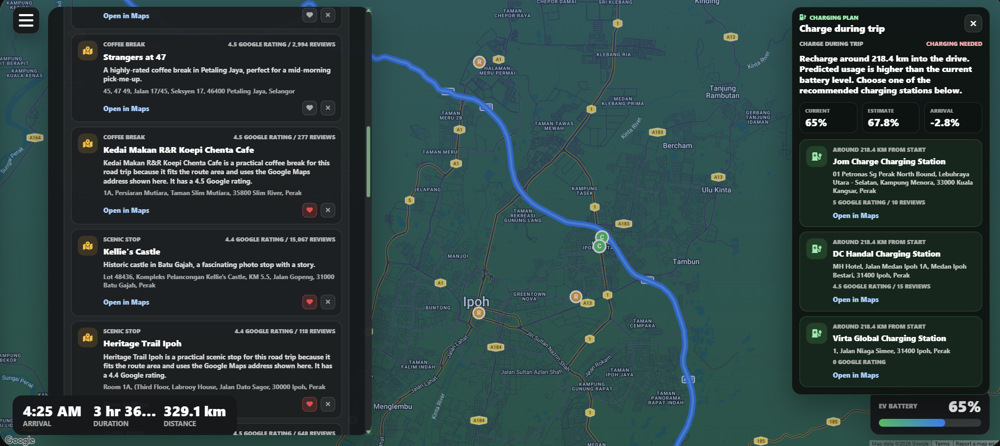
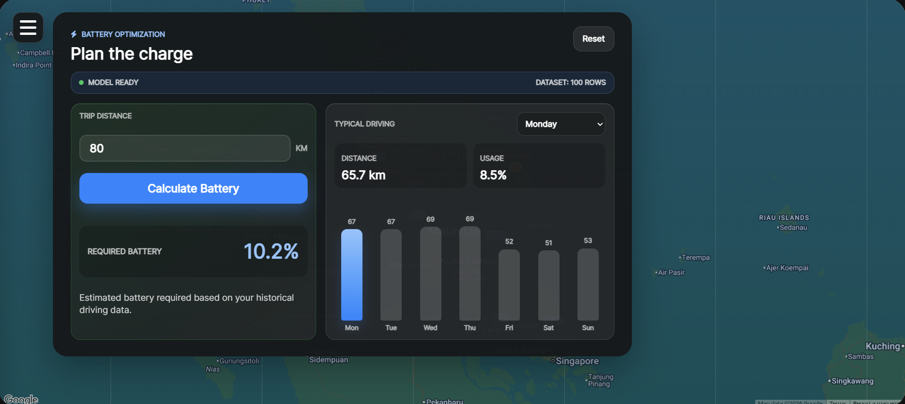

Central AI Agent
A LangGraph workflow loads the active route, fatigue score, EV battery state, and preference memory before producing a driver-facing recommendation.
Mercedes Enhanced Mobility Engine
MEME is a FastAPI and vanilla JavaScript prototype that turns isolated car signals into one route-aware recommendation. The driver still confirms every action.
Judge Summary
MEME keeps trip planning, live fatigue detection, battery prediction, and driver preferences in one decision context. That lets the app recommend a useful next step instead of showing disconnected warnings.
A LangGraph workflow loads the active route, fatigue score, EV battery state, and preference memory before producing a driver-facing recommendation.
Rest stops and chargers are searched ahead on the route, then ranked by actual drive impact, safety priority, Google place data, and remembered preferences.
The system never silently changes the trip. It presents one clear action, such as Rest there or Charge there, and updates the route only after acceptance.
System Architecture
The prototype is intentionally inspectable: focused browser modules call clear backend endpoints, and complex decisions live in state-machine workflows.
Natural-language trips, active route ID, webcam fatigue frames, EV battery level.
/api/trip-planner, /api/central-agent, /api/battery, /ws/fatigue/detect.
Loads route state, evaluates risk, searches candidates, builds one recommendation.
DeepSeek, XGBoost, MediaPipe FaceMesh, Google Routes, Places, and Matrix APIs.
Route card, rest modal, charging plan, updated route polyline, preference memory.
A road trip registers through /api/central-agent/active-road-trip, so later
fatigue and charging requests reason over the same active route.
The agent reuses route context instead of forcing fatigue, charging, and preferences to rebuild journey state independently.
New vehicle signals can become graph inputs without rewriting the map UI or duplicating routing logic.
Technical Diagrams
These are the detailed diagrams from the first MEME docs page, covering the central agent, route lifecycle, full stack, trip planner, battery model, and fatigue intervention flow.
Road-trip state is registered once, then reused by fatigue and charging recommendations so the driver sees one contextual action instead of disconnected alerts.
The browser modules call clear API groups, while LangGraph, XGBoost, MediaPipe, DeepSeek, and Google Maps services handle specialized reasoning.
The original architecture flow shows the key handoff: once the trip is planned and registered, fatigue and battery modules can monitor the same route and ask before mutating it.
DeepSeek parses the trip intent, Google services resolve and rank candidates, and LangGraph asks for clarification only when a human choice is needed.
XGBoost models predict trip battery need, weekday distance, and weekday usage; the central charging service uses that prediction to decide whether to search chargers.
The browser streams frames to the WebSocket, MediaPipe produces fatigue signals, and the central agent searches safe stops ahead when warning severity is reached.
Core Technical Modules
DeepSeek parses the driver request into structured trip intent. Google Places resolves candidates, Google Routes ranks drive impact, and LangGraph interrupts when a human choice is needed.
The central agent connects route geometry, fatigue severity, battery need, and preference memory before creating one actionable notification.
Three models predict trip battery need, expected weekday distance, and expected weekday usage from the EV dataset. Charging logic uses the prediction to find the right charger point on the active route.
500_ev.xlsx.The browser streams webcam frames over a WebSocket. MediaPipe FaceMesh measures eyes, mouth, blinks, and head motion. When fatigue reaches warning level, the central agent finds a safe stop ahead.
Important Runtime Flows
Driver prompt → DeepSeek structured parse → Google Places resolution → Routes computation → map rendering and route registration.
Webcam score crosses threshold → active route loaded → rest stops searched ahead → driver accepts stop → route recomputed with the stop.
Battery level and route distance → XGBoost trip prediction → charger search near trigger point → charging card → accepted charger inserted into route.
Prototype Evidence
These screenshots show the map-first cockpit, recommendation surfaces, battery predictor, and live fatigue monitor that connect back to the backend modules above.



Stack
Focused browser modules for map rendering, trip actions, road trips, battery, and fatigue.
Router groups for maps, trip planner, central agent, battery, and fatigue detection.
State-machine decisions, language parsing, battery prediction, and live computer vision.
Route geometry, place search, preference learning, and graph checkpointing support.